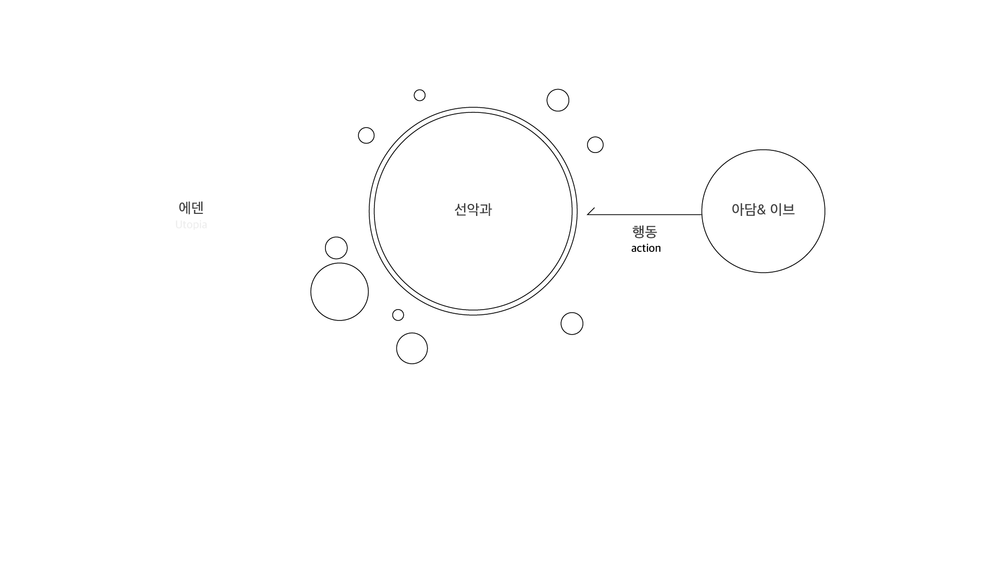
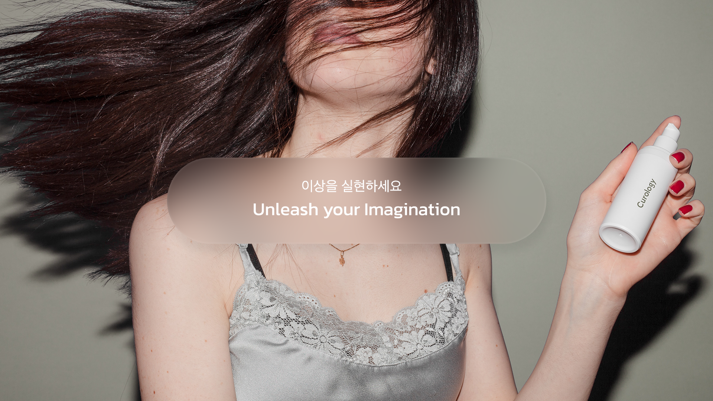

Khnky 는 LOVE 와 SCIENCE 라는 핵심 가치를 통해 모든 커플들의 사랑과 안녕을 바라는 촉촉한 제품들을 선보였습니다. 핵심가치를 반영한 입욕젤 ‘선악과즙’ 은 Khnky 의 주력상품으로 자리매김하였습니다. 다만, 현재의 시장에서 Khnky 는 브랜드 가치보다 ‘선악과즙’ ‘입욕젤’ ‘젤리탕’ 으로 인식되는 제품의 가치에 치중되어 있었습니다. 브랜드 재정립을 통한 브랜드 가치체계 구축은 ‘선악과즙’ 을 비롯한 제품의 가치 뿐 아니라 Khnky 라는 또 하나의 가치를 소비자에게 제시하는 것과 같습니다.( 오! 킨키였네? ) 더불어 Khnky 가 나아가야 할 방향성을 제시하고, 시장 영역 확장에 기여하도록 합니다. 이 프로젝트에서는 파편화 되어 있는 에셋을 정리하고 구체화 하여 다양한 제품들이 다양한 채널에서 노출되더라도 일관된 브랜드 메시지를 전달 할 수 있도록 합니다. 지금까지의 자산들과, 출시될 자산들의 연결점을 제시하고, 유저와의 접점에서 건 낼 브랜드 메시지를 정의하고자 합니다.

Khnky 는 ‘ 에덴 ’ 과 ‘ 아담과 이브 ’ 의 스토리에서 많은 영감을 받았습니다. 아담과 이브는 선악과를 따먹음으로써 우리가 인지할 수 있는 ‘선악과를 따먹은 인간’으로써 정체성을 가지게 되고, 각성하게 되었습니다. 선악과는 아담과 이브의 욕망 혹은 이상의 메타포이자 스스로를 자각하는 각성제 입니다. Khnky 가 주목한 부분은 이 욕망과 이상을 아담과 이브가 따먹었다는 능동적인 행위에 있습니다. 이상을 쫒는 능동적인 행위. Khnky의 선악과를 사용하는 유저는, 주체가 되어 행위를 함으로써 이상을 실현하고 욕망을 충족합니다. Khnky 는 꿈꾸는 주체(유저)와 이상을 실현할 수 있는 ‘선악과’를 키우고, 이상을 실현할 수 있도록 돕는 조력자가 됩니다.
Khnky 가 키우는 ‘선악과’ 는 ‘아담’ 과 ‘이브’ 의 이상을 실현시키도록 유혹합니다. ‘아담’과 ‘이브’ 들은 자기만의 색다른 이상을 가지고 Khnky의 ‘선악과’ 를 통해 실현시킵니다. ‘아담’ 과 ‘이브’ 들의 무한한 상상력을 불러일으킬 Khnky 의 ‘선악과’는 매력적이며, 정형화 되지 않았습니다.

선악과를 따먹어요.
이상을 실현하세요.
매력적인
상상력을 자극하는

Key Visual
Forbidden Eden
금지해야될 것을 금지하고, 금지하지 말아야 할 것을 깬다 / Forbidden / 떠난다 / 탈출 / 선악과 / Tomorrow Land / 뉴에덴 / 진입 / 관점의 차이 /
소비자가 주체가 되어 행위할 수 있는 제품.
Forbidden Eden 은 '에덴' 을 새롭게 정의 합니다. 선악과를 통해 '에덴' 에서 쫒겨난게 아니라. 선악과라는 이상을 실현하고 이상실현을 통해 만나게 된 새로운 '에덴'은 이상을 갈망으로 통해 만나게 된 새로운 이상적인 '에덴' 이라고 . 선악과를 통해 만나게 된 새로운 장소는 이상을 실현한 이상적인 새로운 '에덴' 이었을 것이라고 생각합니다. Forbidden Eden 은 에덴을 새롭게 정의해봅니다. 에덴에서 쫒겨난 아담과 이브가 만나게 된 새로운 세계는 이상 실현을 통해 만나게 된 새로운 '에덴'이 아니었을까. 사회적 기준으로 둘러싸여 있는 '에덴' 에서 탈피해 자신이 이상하던 '에덴'을 만나게 됩니다.
그래서 저희는 '선악과' 를 만듭니다.
Forbidden Eden 은 기존 사회의 기준으로 만들어진 에덴 보다, '선악과'를 통해 구현된 아담과 이브가 만나게된 새로운 '에덴'이 더 이상적인 곳이라고 믿습니다. 자신의 갈망과 이상을 실현하기 위해 '선악과'를 쟁취했고, 이상을 실현한 공간으로 믿습니다. Forbidden Eden 은 소비자의 이상을 실현할 '선악과 (Forbidden fruit)'를 만들고 이를 통해 만나게 될 새로운 '에덴'을 제안합니다. 통념적으로 금기시되었던 것들에서 벗어나, 이상을 실현할
선악과라는 이상을 실현할 매개체를 능동적으로 쟁취하는 아담과 이브들의 행위를 존중하며 그 들이 맞이할 이상적인 것들을 추종합니다
Forbidden Eden은 '선악과'를 통해 얻게될 이상적인 것들에 집중하고 소비자에게 제안해왔습니다.
'선악과'라는 이상을 쟁취하고 만나게 된 새로운 '에덴'은 이상을 쫒은 '아담'과 '이브' 들이 원하는 '가장 이상적인 낙원' 이었을 것이라 믿습니다.
갈망했던 '선악과'를 따먹는 의지실현을 통해 만나게 된 새로운 '에덴'은 이상을 쫒은 그들의 이상이 발현된 '가장 이상적인 낙원' 이었을 것이라고 믿습니다.
사회적 기준으로 만들어진 '에덴'을 탈피해 스스로가 추구하는 이상을 새로운 관점으로 맞이할 색다른 '에덴' 을 그리고 '아담'과 '이브'들에게 제안합니다.
제한되어 왔던 것을 풀어내고, 남용되지 말아야 할 것을 사용하지 않는. 새로운 관점으로 만드는.
얽매였던 것들을 풀어내고, 남용되지 말아야 할 것들을 사용하지 않는. 새로운 관점으로 만드는.
Forbidden Eden은 '아담과 이브'들의 삶을 자세히 들여다보고, 이들의 이상이 실현될 수 있는 방법들을 제시해왔습니다.
갈망했던 '선악과'를 따먹는 의지실현을 통해 만나게 된 새로운 '에덴'은 이상을 쫒은 이들의 이상이 발현된 '가장 이상적인 낙원' 이었을 것이라고 믿습니다.
사회적 기준으로 만들어진 '에덴'을 탈피해 스스로가 추구하는 이상을 맞이할 수 있도록 우리는 새로운 관점으로 제안하고 돕습니다.
제한되어 왔던 것을 풀어내고, 남용되지 말아야 할 것을 사용하지 않는. 새로운 관점으로 만드는.
얽매였던 것들을 풀어내고, 남용되지 말아야 할 것들을 사용하지 않는. 새로운 관점으로 만드는.